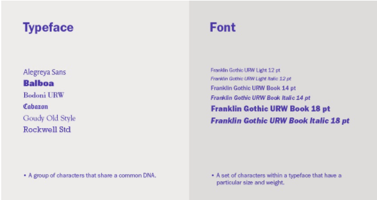

Typografi
Typografi er meget mere end bare tekst. Det findes som fonts, kolonner, læsbarhed, layout, logo’er og billeder. Der findes primært 2 slags typografier - serif og Sans-serif
Typefaces vs. fonts
Hvad er forskellen på et typeface og en font?
Et typeface er en gruppe tegn, som har en fællesbetegnelse - som f.eks. at Alegreya Sans er et typeface som stammer fra Rockwell Standard, hvor en font er en bestemt samling af glyffer, som stammer fra et typeface.
Udover dette kommer typografiens anatomi også i spil, dette er en række begreber som kendetegner typografi. en række af disse begreber er bl.a:
minuskler - de små bogstaver
majuskler er de store bogstaver
X-height er højden på minsuklsen - den måles på mundlinjen til toppen af bogstavet
Leading er måling fra bundlinje til bundlinje man kalder også i dagligdagen for linjeafstand.
Kerning er bogstavernes afstand til hinanden
Tracking er afstand mellem bogstaverne i et ord eller markering

(https://design.tutsplus.com/articles/the-ultimate-guide-to-basic-typography--cms-33460)
Serif og sans-serif
Der findes 2 slags klassifikationer man vil støde på som multimediedesigner. Disse to fonts er serif og sans-serif
Serif:
Har fået sit navn fra sine ‘fødder’ - den tynde linje som afslutter grundstregen på et bogstav eller et symbol. Benyttes ofte som brødtekst, da fødderne gør større mængder tekst letlæselige. Fødderne danner nærmest en linie for øjet at følge. Kan opfattes som gammeldags.
Sans-serif
Sans’ er fransk og betyder ‘uden’ - altså ‘uden serif’ eller ‘uden fødder’. Benyttes ofte til overskrifter, da den stramme moderne stil giver en god kontrast til den letlæselige serif. Har i lang tid været det foretrukne som brødtekst (copy) på moderne websites. (Carsten Kjeldsen Bogner, fremlæggelse om typografi,)
- http://www.graphic-design.com/Type/bergsland/humanist.html
- https://elearningbrothers.com/blog/the-4-main-elearning-font-categories/